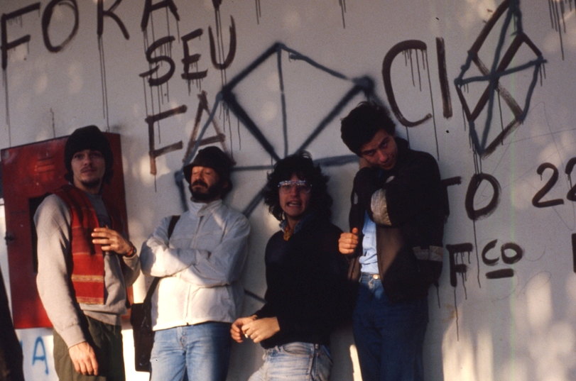
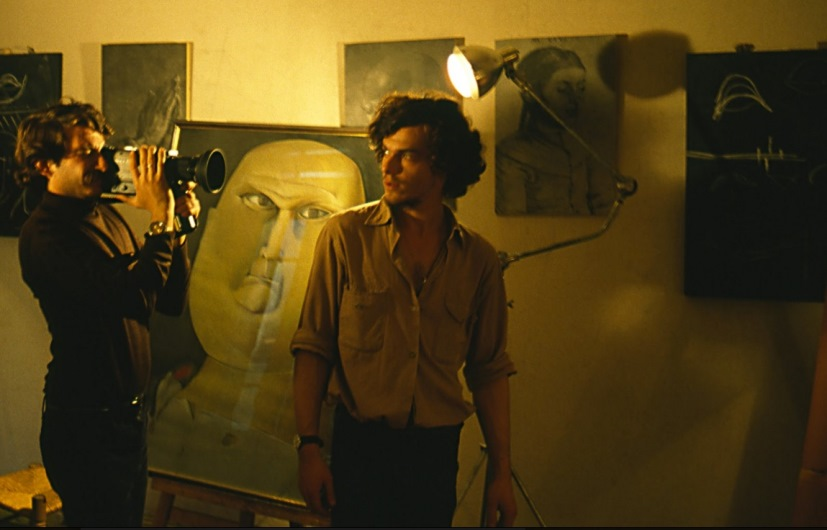
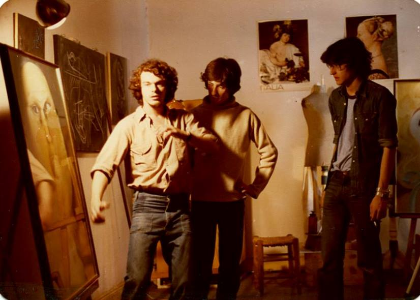
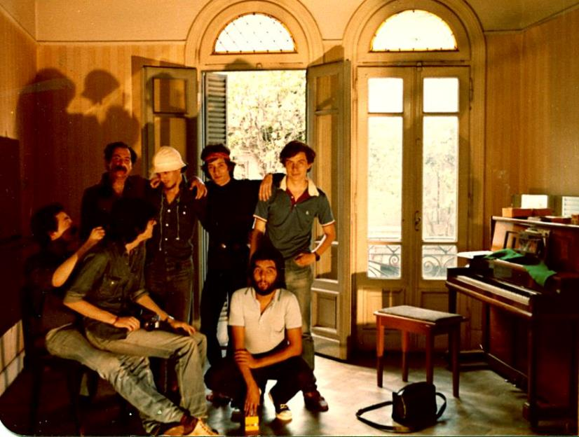

|
|
|
|
TiC (Taller de
investigaciones cinematográficas) Fundado por Sergio Bellotti, Magoo (Eduardo
Nico), Picun
(Roberto Barandalla) y Muñeco (Adrián Fanjul). Estractos de su historia, contada por Magoo, editada en “Enciclopedia
surrealista” a fines de 1981: “El TiC (Taller
de investigaciones cinematográficas) nace inmediatamente después de la
realización de Alterarte I (diciembre del ’79).
Impresionados por la fuerza y dinamismo del TiT de aquel entonces, hicimos un
primer contacto en el que recibimos la propuesta de formar un taller de cine
para incorporarlo a la actividad de la casona de la Avenida Córdoba.” “El reconocernos como TiC significaba
para nosotros, estudiantes de la Escuela
Panamericana de Arte, abandonar la idea de formar un taller-bolsa-de-gatos sin ningún tipo de principios con gente de la
escuela, para definirnos por la investigación y experimentación en arte; en
ese camino no fuimos más de cuatro los iniciales y no más de diez en toda la
primera etapa.” El taller comenzó a funcionar en La
manzana de las luces, una casona de San Telmo organizada por un ente
cultural semioficial que a cambio les exigió llevar adelante actividades de
cine-club. En esta etapa el TiC tuvo acceso a abundante material fílmico, se
fue aprovisionando de un mínimo equipo de filmación de Super 8, y estudió e
investigó sobre teóricos y realizadores cinematográficos, afianzándose como
taller. Y entonces comenzaron a producir. “Se realiza a nivel fílmico una
experiencia de tipo teatral con cámara fija por Magoo, y un corto experimental
(persecución con cámaras subjetivas) pero ya con la participación y discusión
de todo el taller tanto del guión como de la puesta y el montaje, y a partir de
allí se trabaja con este método. Todos deben realizar su corto a medida que
van surgiendo los guiones, y se costean en forma cooperativa.” Entre otros trabajos, realizan “El loco de la carretilla” (dirigido po Magoo, con Sergio como protagonista; era la primera parte de una película más larga que nunca se realizó) y “Cthulhu” (dirigido por Sergio, con Cthulhu, del TiT, como protagonista; cámara por Sergio, Magoo y Picun). Pero el grupo no estaba conforme y se sume en un proceso de confusión, que comienza a disiparse cuando liquida el cine-club y se liga (a fines de 1980) a Oscar Gamardo, licenciado en cinematografía de Lodz. En esta etapa, entre otros trabajos, realizan durante 1981 los cortos "El amor vence", dirigido por Picun (firmó como Beto Sánchez), cámara de Magoo, y protagonizado por Gallego y Marta Gali (directores de grupos del TiT) y "Detrás del muro", dirigido por Muñeco, cámara de Guti, y protagonizado por Paula Caraballo y Gaby (Gabriela Liffschitz), ambas del TiT (Grupo de Gallego). “Finalmente, el proyecto Alterarte
II nos vuelve a poner en contacto con el TiT, con el que habíamos
emprendido caminos artísticos y la preparación del viaje a Brasil. Y fue el
film “Manifiesto sobre Alterarte II”
que comienza a resolver la confusión artística (aunque no está montado el
material) por la vía de la transgresión del lenguaje y la realidad
convencional.” Después de participar y filmar en Alterarte II, el TiC participó de la fundación del Movimiento Surrealista Internacional. Links a los videos de cortos del TiC (comentarios de Picun): "Encapuchados" 1979 Es
un ejercicio filmado a fines de 1979 en la primera casona del TiT de la Avenida
Córdoba. Es lo primero que filmó el TiC. Este trabajo es inédito y tiene que
ver con la inclusión de Sergio Bellotti en el TiC, que se había creado
recientemente. Sergio era del TiT pero se incorporó inmediatamente al TiC
apenas creado, porque “siempre había querido hacer cine”. Nosotros teníamos
en la cabeza la planificación y la escritura necesaria para hacer una película,
porque éramos estudiantes de cine, porque los rollitos de super 8 eran caros,
etc. Sergio vino con su impronta más espontánea, tenía una idea, teníamos la
Casona de la calle Córdoba y estaban unos cuantos actores de distintos grupos
del TiT dispuestos a actuar y ayudar, así que un domingo fuimos y lo hicimos.
Está apenas editada. Lo más destacado es que esa imagen de los encapuchados,
las personas sin caras, luego se hizo popular en el “Siluetazo” (1983) para
darle presencia e imagen a los desaparecidos, aunque en el corto eso no está
tan explícito; además en el film las figuras despersonalizadas son tanto las víctimas
como los victimarios, con la diferencia de que las víctimas estaban marcadas con
una cruz roja. Al final del corto hay unos fotogramas, apenas segundos, en que
se ven a los participantes a cara descubierta. Actuaron Daniel Fiorucci, Cecilia
Illia, Marta Gali, Rubén Gallego, Sergio y el Cthulu. Sergio, Magoo y yo hicimos cámara y luego el montaje. "El Cthulhu" 1980 La
dirigió Sergio Bellotti y también fue hecha debido a su energía y su ímpetu
creativo sin demasiada planificación. Fueron jornadas muy separadas a lo largo
del año 1980. Los escenarios callejeros son muy valiosos (se veía poco eso
entonces), más la Manzana de las Luces (donde los integrantes del TiC
tenían un cine club) y finalmente la pensión donde vivía Cthulu (actor e
inspirador del film) le dan una estética muy original para la época. También
se filmó en el atelier de Alejandra Aspiazu, y en un lugar donde ensayaba
entonces el grupo de Raúl (que aparece en la película). Es interesante
destacar que el formato de la película podría enmarcarse en lo que hoy se
llama “Documental apócrifo o Mockumentary”, género ya bastante hecho e
incluso vulgarizado en la web, pero que entonces no existía, en el que Sergio
sin duda fue precursor sin haber visto nada parecido. Trabajamos además: Adrian
Muñeco Fanjul, Tito Gutiérrez Paez, El Foca, el Guti Piccinini y yo (todos
integrantes del TIC). El corto participó de varios festivales y muestras. "El loco de la carretilla" 1980 La
dirigió e hizo cámara Magoo, yo me encargué de sonido y asistencia.
Colaboraron Choché Martini y la entonces novia de Sergio, Alejandra Aspiazu.
Sergio Bellotti fue el actor y fue filmada en casa de Magoo en un par de días.
Este corto sería una primera parte de una serie que contaba las andanzas de un
tipo que enloquecía, agarraba una carretilla y se iba a recorrer el país con
ella (hecho real que ocurrió en el pueblo de Magoo y había salido en las
noticias y era leyenda en Uribelarrea). Nunca estuvo en muestras ni festivales,
es de alguna manera inédita. "El amor vence" 1981 Fue
la primera película planificada, con guión y plan de rodaje. Fue filmada en
tres días en mi depto. de entonces. Escrita y dirigida por mí (Picun), cámara
de Magoo, asistencia de Lina y Juan Jose Martini (Choché), protagonizada por
Marta Gali y Ruben Gallego. En los créditos todos usamos seudónimos. La película
se terminó de sonorizar en el taller de Gamardo (que el TiC organizó en el '81)
y las voces de Gallego y Marta fueron dobladas por alumnos de ese taller, ante
la imposibilidad de que los verdaderos actores vinieran a las citas para hacer
el trabajo. Se hizo así porque la película iba a participar en un Festival
(creo que Villa Gesell 1981) y luego haríamos el doblaje definitivo, pero nunca
se hizo. El título refiere a las únicas pintadas que había en la ciudad en
esa época. La cana había borrado todo de las paredes pero de repente
aparecieron éstas que decían “El Amor Vence”, muy de jóvenes cristianos,
y a mí me llamó mucho la atención. Mis propios problemas amorosos, el difícil
aprendizaje de las formas de relación más feministas y abiertas que se
practicaba en el TiT, hizo que de un modo irónico la peli terminara llevando
ese nombre, que estaba pintado a la vuelta de la casa. "Detrás del muro" 1981 La dirigió Adrián Fanjul (El Muñeco) y fue quizás el único ejercicio del Taller de Gamardo que se convirtió en película. Fue muy planificada y sirvió para que varios de nosotros experimentáramos en un tipo de rodaje más profesional. Por ejemplo, la fotografía de Gustavo (Guti) Piccinini fue la primera vez que tuvo cierto rigor. Yo me encargué de la asistencia de dirección. "Marat/Sade" 1981 "Ejercicios TiC" 1981 El primer minuto y medio muestra una reunión de miembros TiT/TiC/TiM después de Alterarte II a la vuelta en Buenos Aires, para hablar sobre el festival en Brasil y la fundación del MSI (Movimiento Surrealista Internacional). Después hay una serie de ejercicios técnicos (seguimiento, planos, zoom, foco), ejercicios con actores y de animación de objetos; eran ejercicios internos, no hechos con la intención de mostrarlos.  Arriba: el TiC en Alterarte II (de
izquierda a derecha: Sergio,
Magoo, Picun y Muñeco)    Después de la disolución de los talleres, Picun y Sergio hicieron su carrera como guionistas, productores y directores de cine y televisión. Picun escribió numerosos guiones para ficción y documentales; en 2007 codirigió el documental "Botnia, fragmentos de una frontera", sobre la papelera instalada a orillas del río Uruguay. Sergio realizó varias películas documentales y otras de ficción con actores reconocidos ("Tesoro mío" en 1999, "Sudeste" en 2002, "La vida por Perón" en 2004). Su último trabajo fue el documental "Buenos Aires, la línea invisible" (2010), que trata sobre las personas de raza negra en la ciudad y sus ancestros. Murió enfermo en 2012. Magoo fue a vivir a italia y editó varios libros de poesía; el último es "Puros por cruza" (2011). Muñeco es profesor e investigador del Departamento de letras modernas en la Universidad de San Pablo, Brasil. Link al video "El libro perdido Sudeste de Haroldo Conti" (desde 1'50" comienza un diálogo con Sergio Bellotti sobre el libro y su película de 2002). Link al trailer de "La vida por Perón"
|